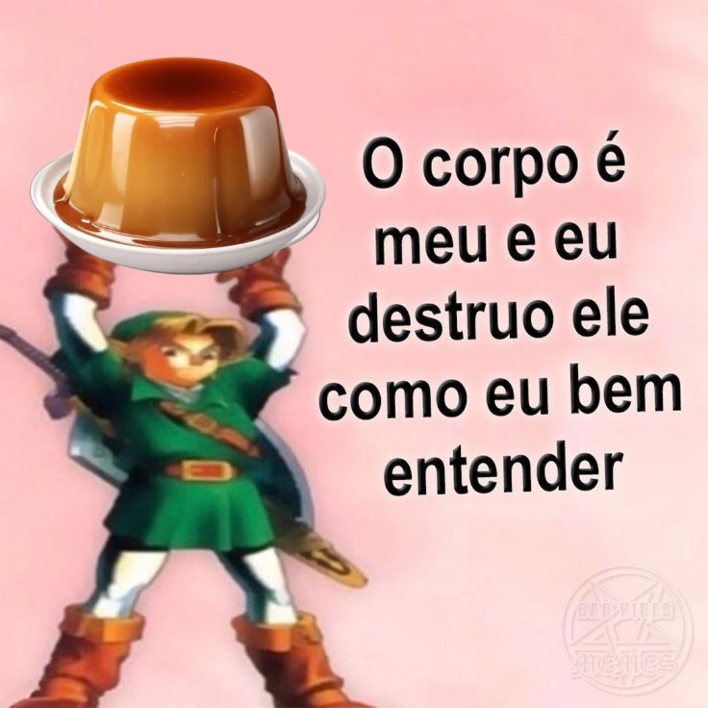
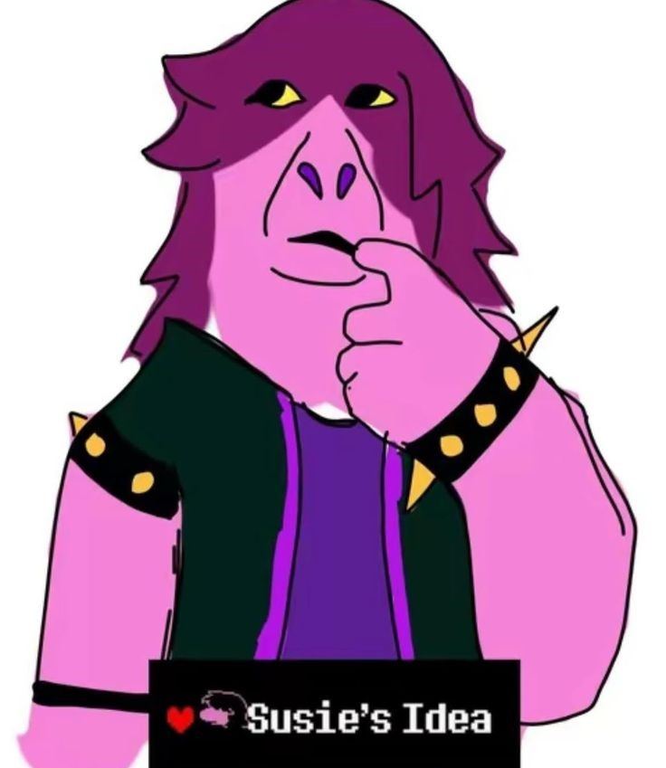
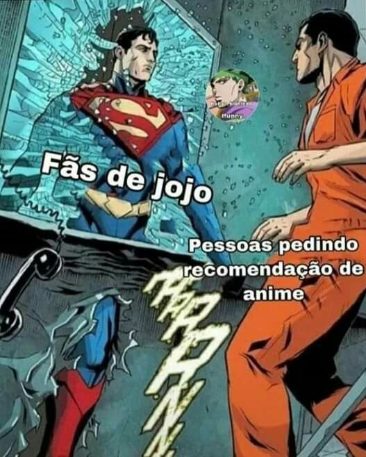

O que eu gosto ou que me deixam feliz...
🍮Doces🍮
Começo falando do meu tipo de comida favorito, doces. Desde pequeno sempre fui fã de biscoitos recheados e chocolate, e meu doce preferido no topo da lista é pudim. Mesmo amando sobremesas, também aprecio salgados, como lasanha, entre outras comidas gostosas.
Por que falo tanto sobre doces? Porque eles são a minha fraqueza. Um gesto simples, como receber um pirulito ou um docinho, costuma me conquistar com facilidade. Não é que eu me torne romântico de imediato, mas fico genuinamente grato e feliz com quem faz esse gesto.
Resumindo tudo, doces são meu ponto fraco e eu os adoro. Se quiser me ajudar a relaxar quando estou estressado, jogue um pirulito em mim. Brincadeira, por favor não atirem doces em mim.

Menção honrosa para o Brigabolo. Esse doce, se eu for considerar o lado emocional, supera até o pudim. Não em sabor, mas em lembrança. Quando eu era mais jovem e chegava cansado depois de um dia puxado de natação, eu passava na padaria e comia um Brigabolo. A sensação era simplesmente extraordinária, algo que marcou de um jeito especial e que eu carrego até hoje. Se for colocar o sentimento na balança, Brigabolo vence todos os outros doces que já provei.

🎬Desenhos|animes|filmes🎬
Então, essa é a parte que não é tão tranquila de comentar (admito que tenho um pouco de vergonha), mas aqui vai.
Os tipos de desenhos, animes e filmes que eu mais gosto são, na verdade, histórias de romance. Essa é a minha categoria favorita. Isso não quer dizer que eu não curta outros tipos, só que romance sempre chamou mais a minha atenção.

Em relação aos desenhos que o pessoal não costuma chamar de anime, meus preferidos são: Gravity Falls, Steven Universe, Star vs As Forças do Mal, Apenas um Show, Hora de Aventura, Ben 10, Historietas Assombradas e vários outros.
Entre os que o público geralmente classifica como anime, meus favoritos são: Dragon Ball no geral, Komi Can't Communicate, JoJo no geral, Digimon no geral, Pokémon no geral, Super Onze e outros que marcaram minha vida.
Para finalizar, os filmes que eu mais gosto são: UP Altas Aventuras, Kung Fu Panda, Como Treinar o Seu Dragão no geral, Ponyo, Bambi e muitos outros que trazem uma boa história e um toque de emoção.

🎮Jogos eletrônicos🎮
Esse aqui dá para resumir bem rápido. Gosto muito de jogos de luta ou corrida, tudo que envolva ação intensa e bastante adrenalina. Não sou tão fã de jogos em que o cérebro é a principal ferramenta, como puzzles, porque sinto que eles acabam atrasando a experiência que o jogo poderia entregar se focasse mais no conteúdo do que em quebra-cabeças.
Mesmo assim, isso não significa que eu rejeite esses jogos. Também curto títulos onde a cooperação é bem-vinda e onde posso jogar junto com uma dupla.
O primeiro jogo que joguei na minha vida foi Dragon Ball Budokai Tenkaichi 3 de PS2, então ele ocupa um lugar especial no meu coração.
Os jogos que estou jogando atualmente são: Roblox, Dragon Ball Tag Team, Minecraft Java Edition, Kirby no geral, Inazuma Eleven de NDS, Strikers 2013 de Nintendo WII e várias outras pérolas que ainda pretendo conhecer.

🎨Desenhar🎨
Gosto de desenhar quando estou realmente entediado. Não me considero um Picasso e nem sei direito como fazer um rascunho perfeito, mas desenhar me permite expressar criatividade ao criar personagens ou cenas. Muitos dos meus cadernos da escola e os que tenho em casa estão cheios de desenhos que fiz ao longo do tempo.
Tenho dois grandes problemas quando o assunto é desenho. O primeiro é a minha preguiça. Sempre penso que, se eu tivesse praticado desde os meus 8 anos, hoje eu conseguiria desenhar animes com facilidade. Também tenho a mania de evitar copiar imagens para treinar observação, o que atrasa bastante meu progresso.
O segundo problema é que, quando percebo que o desenho vai demorar demais ou começo a achar que ele está ficando feio, eu simplesmente desisto e fico séculos sem tentar de novo.

🦋Coisas fofas🦋
Pois é. Tenho uma verdadeira paixão por coisas fofas, como gatos e cachorros de pequeno porte, além de qualquer outro animal que desperte aquela vontade de abraçar até quase explodir de ternura. Também adoro bichos de pelúcia e já tive um que, de tanto abraços e ficar apertando, acabou perdendo todo o enchimento. No fim, precisei me despedir dele e jogar fora, ele não tinha mais salvação...
E é isso. Coisas fofas são incríveis. Elas ajudam minha mente a se encher de leveza, para que eu não mergulhe demais nos pensamentos complicados da vida, para que a ansiedade não avance e a tristeza não encontre espaço. Yaaaay!

🎇M e M e S🎇
Agora, para finalizar. Memes são uma parte importante por aqui. Como dá para notar, o site inteiro está cheio deles. É algo que realmente gosto, especialmente aqueles que não são agressivos e que não machucam ninguém. Prefiro memes que façam qualquer pessoa rir, sem deixar ninguém desconfortável ou triste ao ver.
E... É isso. O que mais eu poderia dizer? Acho que não tem muito além disso. São só memes. E quem é que não gosta de um meme? É quase impossível. A pessoa precisa ter um coração de pedra.

O que eu valorizo...
🤝🏾Em amizade🤝🏾
De maneira simples, o que mais valorizo em uma amizade é o cuidado mútuo e a confiança verdadeira. Para mim, amizade significa apoiar o que é bom, incentivar o que faz bem e seguir aquilo que é correto diante da sociedade. Se algo for errado, especialmente crime, não tem conversa, precisa ser denunciado. Acredito que amigos de verdade caminham juntos no que é certo, sabem brincar sem ultrapassar limites e respeitam os limites um do outro. E, no fim, é isso. Prefiro mais a qualidade do que a quantidade. Carrego comigo um ditado que não lembro onde ouvi, mas ficou para sempre: "Prefiro ter um amigo que vale por cem do que cem amigos que valem um". Respeito quem me respeita e, sendo assim, é bem fácil ganhar minha amizade.
Também sou o tipo de amigo que sempre está disposto a ouvir. Tenho certeza que minha comunicação cara a cara não seja das melhores, mas na escrita faço o máximo para ajudar, escutar e oferecer um pouco de apoio quando alguém precisa desabafar. Se tiver vergonha de falar com outra pessoa, pode contar comigo sem medo que não irei lhe julgar.
Ah, e uma menção especial que detesto falsidade. Se for falso, apenas se afaste. Não perca seu tempo, nem o meu.

💞Em relação amorosa💞
Começo dizendo algo muito importante para mim. Por causa da minha fé, só posso me envolver em um relacionamento amoroso com alguém que tenha crença e fidelidade em Deus (Jeová Nissi, Rafah, Emanuel... O único Deus na minha religião).
Esse é o requisito essencial. O restante é simples. Não importa se é baixa, alta ou como for. Eu sempre vou respeitar você. E pode ter certeza de uma única coisa, não espere traição da minha parte. Palavras não provam nada, mas, se um dia você me der a chance, eu vou mostrar isso com atitudes. Como já disse, abomino traições. Sou alguém que valoriza o amor, e me ver em uma situação assim seria o mesmo que deixar de ser quem realmente sou.
Outro ponto importante, caso um dia eu entrar em um namoro, será para valer. Desejo um relacionamento que dure até o fim, até a morte ou até o casamento. Sei que são expectativas ou requisitos altos e que cada pessoa tem seu jeito de viver o amor. Mas esse é o meu.